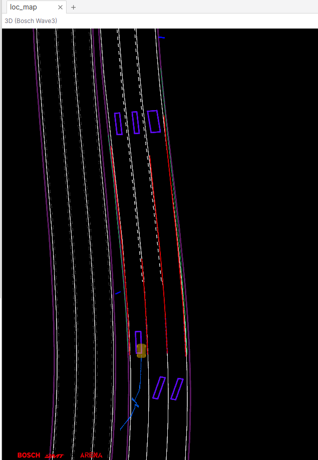
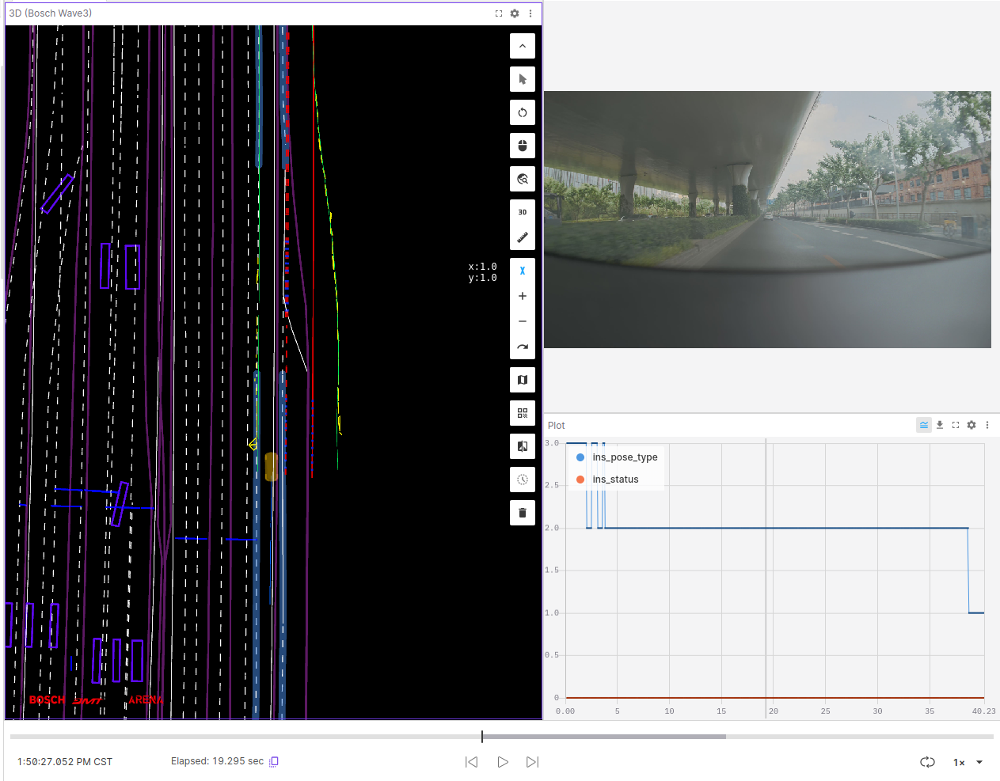

Loc Triage Team know
LOC solution
Frequent questions recognition
Highway / Urban Under positioning accuracy problem
Need to see topic list
|
topic name |
meaning |
|
/ A / l o c _ g a t e w a y / x p e r _ g l o b a l _ l o c _ r e s u l t _ s e n d e r p o r t |
Loc output positioning result |
|
/ A / h d m a p s r v _ h o r i z o n / l o c _ m a p _ i n f o _ s e n d e r p o r t |
HDMAP information received by LOC |
|
/ A / c r o s s _ g a t e w a y / i n s _ d a t a |
INS information received by LOC |
|
/ A / v i p e r _ d r i v i n g / x p e r _ v i p e r _ l a n e _ s e n d e r p o r t |
Vipeer Lane information received by LOC |
|
/A/viper_driving/xper_viper_road_edge_senderport |
Viper edge information received by LOC |
|
/A/viper_driving/xper_viper_road_marker_senderport |
Marker information received by LOC (including Arrow, Stopline, Cross) |
|
/A/viper_driving/xper_viper_traffic_light_output_senderport |
Red and green light information received by LOC |
|
/A/viper_driving/xper_viper_traffic_sign_output_senderport |
Sign information received by LOC |
|
/C/Camera/FrontWide |
Auxiliary viewing image image |
|
/A/liper_driving/xper_liper_free_space_senderport |
Auxiliary to see lidar freespace |
Visual page provided:
highway scene
The main purpose of LOC is to align the Lane, Edge, and MAKER of VIPER, align with the elements in Hamap.
Example data:
|
Positioning status |
Diagram |
|
normal |
 |
|
State in horizontal non -alignment |
|
|
Non -alignment state |
|
Urban intersection scene
|
LOC status |
Diagram |
explain |
|
Unusual situation 1 |
|
Before turning left, Viper's Stopline and Cross cannot align with MAP's Stopline and Cross, and LIPER's Free Space and Roaddge in HDMAP cannot be aligned. After turning left |
|
Anomalous situation 2 |
use / A / h d m a p s r v _ h o r i z o n / l o c _ m a p _ i n f o _ s e n d e r p o r t  use/
A
/
h
d
m
a
p
s
r
v
_
h
o
r
i
z
o
n
/
base
_
m
a
p
_
i
n
f
o
_
s
e
n
d
e
r
p
o
r
t, when there is route, Basemap can send a single -layer map
|
The urban environment is straight, multi -layer scenes |
The problem of upper and lower levels of identification
At many double -layer road scenes, you need to see if the positioning is at the right level:
|
LOC status |
Diagram |
Distinguish |
|
Disadvantage 1: Only Highway maps, the elevated upper and lower floors, the vehicle is driving under the elevated |
12315C_20240520144229790684 |
|
|
Anomalous situation 2: Double -layer map, the vehicle is driving under the elevated, but the positioning is located on the elevated |
12365C_20240516114013000000
|
|
|
NORMAL situation: double -layer map, very similar, positioning normal |
13346C_20240528141829940794
|
It is impossible to distinguish the use of the above section type, and the upper and lower floors are all three lanes. The overlap is very high Seeking help for development |
Labeling and Meaning
|
msg |
meaning |
|
/A/local_msf/xper_local_loc_result_senderport.cxperlocallocalizationresult_m_loc_mode.cxperlocmode_m_mode |
0/1 E2E will return to L2 2/3/4 Local Loc Normal state |
|
/A/loc_gateway/xper_global_loc_result_senderport.cxpergloballocalizationresult_m_odd_infos.cxpergloabllocoddinfo_m_driving_odd |
0 e2e function normal ! 0 E2E function is abnormal |
|
/A/loc_gateway/xper_global_loc_result_senderport.cxpergloballocalizationresult_m_vehicle_info.cxpervehicleinfo_m_matching_mode |
2 LOC layer positioning normal ! 2 E2E function is abnormal |
|
/A/cross_gateway/ins_data.insinterface_m_ins_status |
LCM state >=2 lcm normal <2 lcm 不可用 |